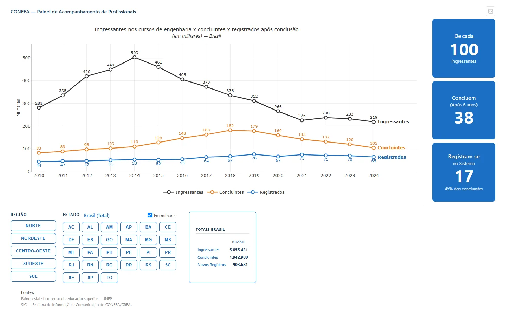
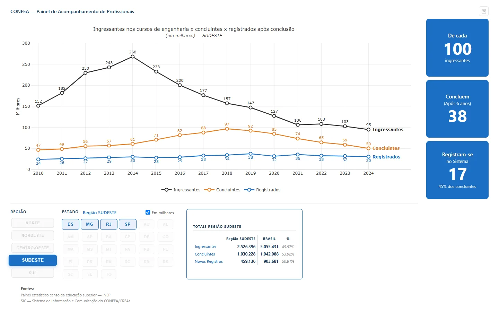
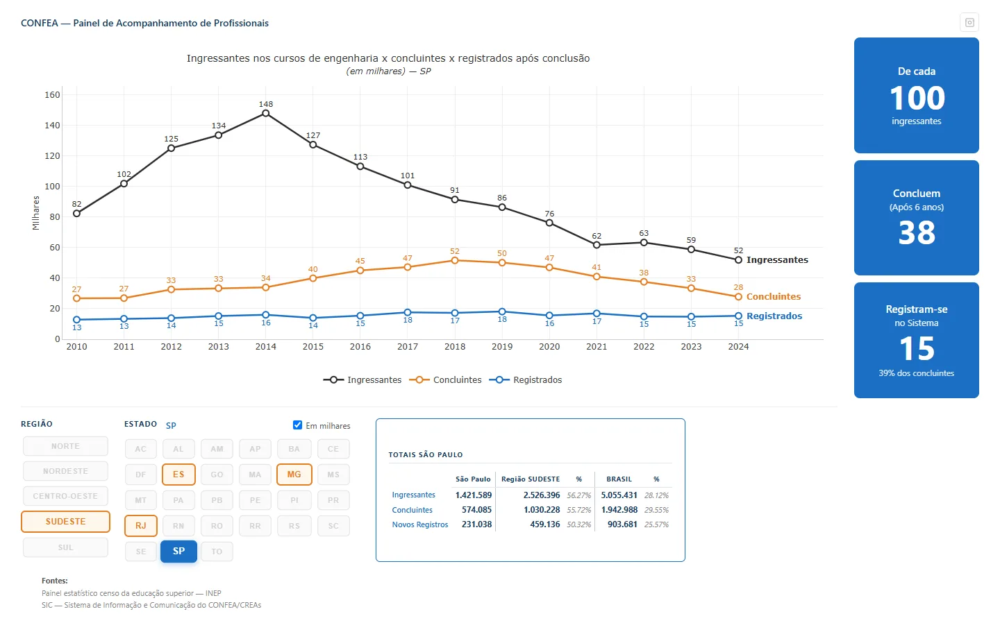

Ingressantes, concluintes e registrados
Painel que cruza os dados de cursos de engenharia do INEP com os novos registros profissionais, por ano, estado, gênero e modalidade.
- Instituição
- CONFEA
- Fontes
- INEP e registros profissionais
- Período
- 2010 a 2024
Telas
Capturas da página pública.






Fluxo de páginas
Série
Brasil, 2010 e 2024.
Fluxo do processo
De cada 100 ingressantes
Correção da consulta
A primeira versão usava a primeira ativação no histórico como data de ingresso.
O histórico só começou entre 2005 e 2007, e isso inflava os ingressos de 2010 em cerca de 24%.
A consulta passou a usar a data do primeiro registro do cadastro. Em 97,2% dos casos com várias ativações (163.038 de 167.730), essa data fica mais perto da primeira ativação.
Achados
ingressantes em engenharia de 2010 a 2024
concluintes no mesmo período
novos registros profissionais
ingressantes de 2014 para 2024 (503 mil para 219 mil)
dos ingressantes do Brasil estão em SP (1.421.589)
dos novos registros são do Sudeste (459.136)